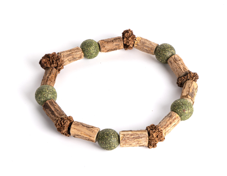
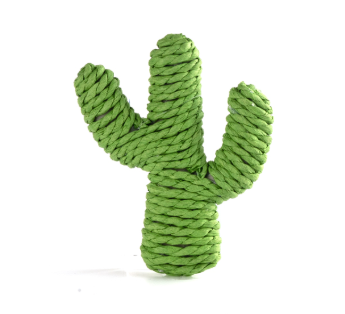
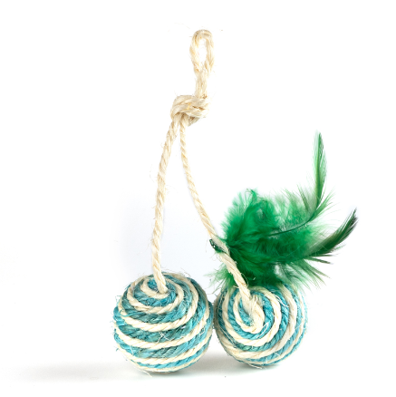
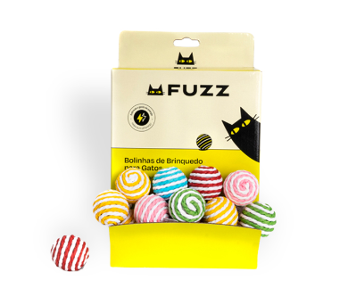
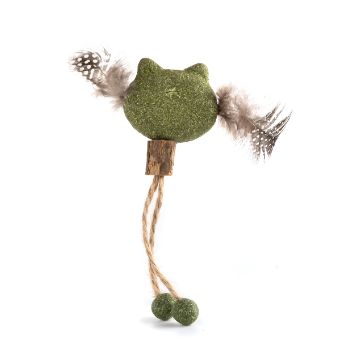
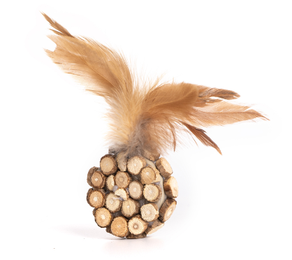
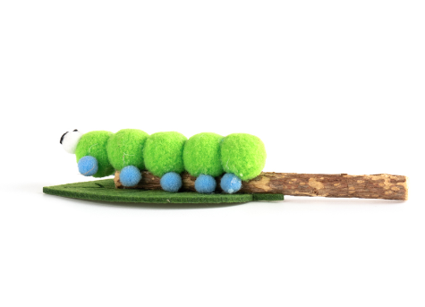
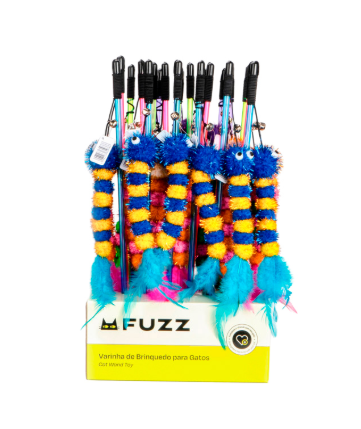
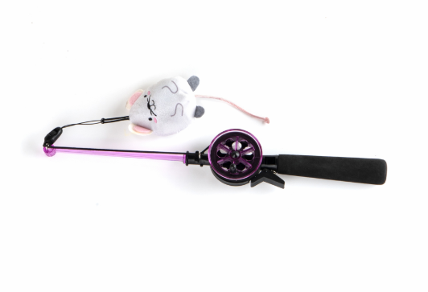

*imagens meramente ilustrativas
Brinquedo Fuzz Pulsera Matatabi para Gatos
Em estoque
10% OFF
R$ 31,99
R$ 39,99
R$ 31,99 para assinantes
Brinquedos em Destaque

Brinquedo Fuzz Cacto de Sisal para Gatos
R$ 9,59

Brinquedo Fuzz Dueto de Sisal para Gatos
R$ 11,59

Brinquedo Fuzz Bolas de Carnaval para Gatos - Cores Sortidas
R$ 3,99

Brinquedo Fuzz Gato Matatabi para Gatos
R$ 11,99

Brinquedo Fuzz Bola de Fogo Matatabi para Gatos
R$ 19,99

Brinquedo Fuzz Minhoca Matatabi para Gatos
R$ 8,79

Brinquedo Fuzz Varinha de Minhoca para Gatos - Cores Sortidas
R$ 15,99

Brinquedo Fuzz Vara de Pesca para Gatos